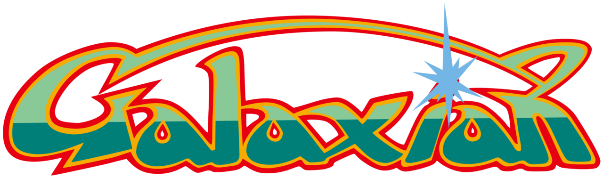
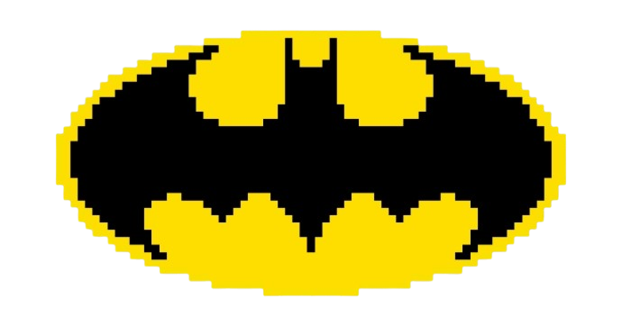

x

Score: 0
JOGO PAUSADO
Continuar (ESC)
Reiniciar Jogo (R)
Controles
Configurações (C)
GALAXIAN - BATMAN VERSION
Sua melhor pontuação: 0
Começar Jogo
Controles
Configurações (C)
CONFIGURAÇÕES
Volume:
Voltar
CONTROLES
W A S D
ou
SETAS
- Movimentação
ESPAÇO
- Atirar
ESC
- Pausar Jogo
C
- Configurações
R
- Reiniciar Jogo
F11
- Tela Cheia
Voltar
VITÓRIA
Sua pontuação: 0
Continuar
GAME OVER
Sua pontuação: 0
Reiniciar Jogo
REINICIAR JOGO?
Tem certeza que deseja reiniciar?
Sim, Reiniciar
Não, Voltar